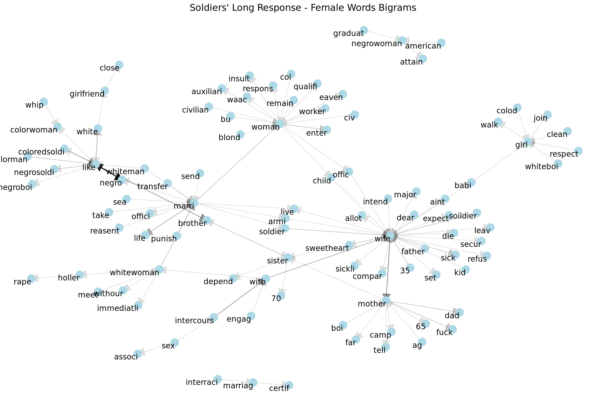
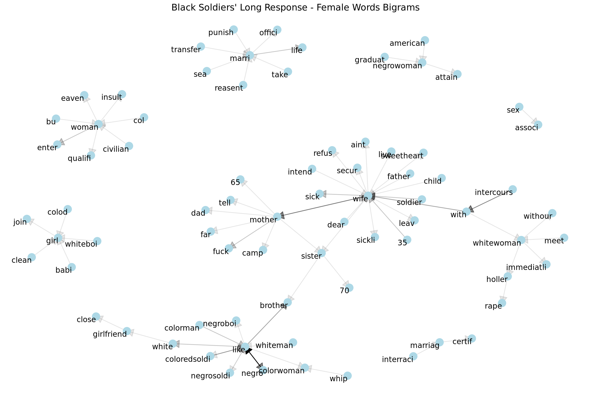
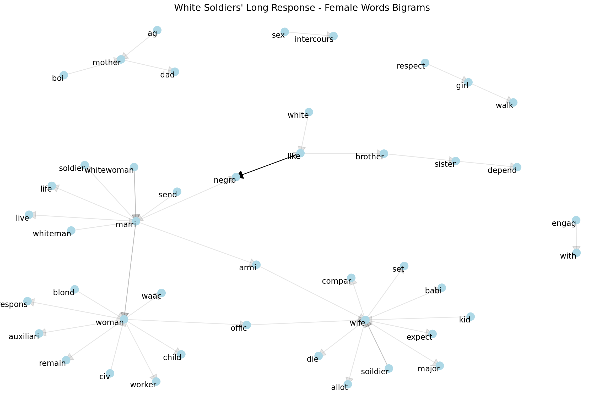
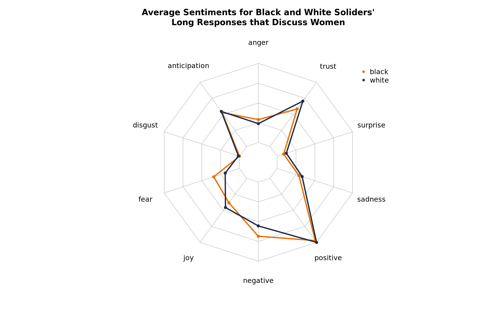

Bigram and Co-Occurrence Text Networks
This page documents our use of bigrams and co-occurence to construct text networks.
R bigrams text networks race relations genderHow do Black and White soldiers talk about gender?
In addition to analyzing race relations between soldiers, we want to see how gender roles were discussed amongst soldiers. Our particular focus is on women's gender roles during the time of 1943 and at the intersection of race relations.
A dictionary of gender words are loaded to identy which responses relate to gender topics. This dictionary was created using terms included in the the Oxford University Press Dictionary of Gender Studies. In addition, there is consideration of how women were referred to in the 1940s such as "lady" and "sweetheart".
Furthermore, phrases such as "colored women" and "negro women" are collapsed and pre-stemmed/pre-lemmed to "colorwoman" and "negrowoman" in both the dictionary and the text. The purpose of this is to treat these references to women as a single entity as opposed to the text being analyzed as colored and negro being frequent adjectives for women.
Main Findings
Which words do soldiers use to pair with female relating words?
In the long response question, soldiers are asked to give their feedback on any part of the questionnaire. Any and all aspects of the war were free to talk about. In this section we will be analyzing the bigrams of the soldier responses. bigrams are the consecutive pairings of words in a corpus of text.

We can see at the like node there is a chain of "whiteman like colorwoman." There are also instances of whiteman are like black men/soldiers. This is either relating the two in similarity or in emotion of likeness between the two.
Another interesting addition to the network with relationship words is the chain of bigrams "sex intercourse with whitewoman". A hot topic was white soldiers being concerned with black soldiers having sexual relations with 'their' whitewomen. Likewise, black soldiers were aware of the tension of being falsely accused for raping or having sex with white women.
Otherwise, themes of family are prevelant for women's role in the commentary of the soldiers. We can also see the different pairings with the word woman, seeming to talk about their roles as workers amongst other attributes (worker, waac, auxiliary)
Lets see how these pairings differ between the white and black soldiers:

Commentary on women are racialized with explicit mention of 'colorwoman' and 'whitewoman'.

We see a complete lack of narrative in black women specifically. Conversations about women are mostly about their role in the family as a mother, wife or sister. Another common conversation is about working women, with pairings to WAAC, auxiliary (referring to WAAC) and worker.
What are the sentiments that are associated with gender?

To create this plot, we filtered the original corpus to responses that contain gendered words, specifically female. When comparing the sentiment resulsts with the knowledge gaind from co-occurence analysis, this plot becomes very revealing. The average sentiments for Black soliders' responses about women are more fearful and negative and less trusting and joyful than white soldiers' responses. In the co-occurances for Black soldiers we saw a presence of commentary that white women "hollar rape". This observation in the co-occurrences reflects the fear that Black soldiers had in being accused of sexually harassing white women.
Conclusion and Policy Implications
[Here you could highlight the main takeaways and the potential policy implications of your findings.]
References
[List your references here using APA format (or at least standardize all of the references using the same format).]